20+ Air Fryer Christmas Desserts for a Sweet Holiday Treat
📌 Save to PinterestChristmas dessert does not need a hot oven or a pot of oil. These twenty air fryer desserts — churros rolled in cinnamon sugar, crisp fritters, fudgy brownies, golden donuts and flaky pastries — cook fast in the air fryer basket, with crisp edges and soft centers every time. Make a batch while dinner rests, set out a few dipping sauces, and let everyone pick their favorite sweet to finish the holiday meal.
How to plan air fryer Christmas desserts
Pick a mix, not a single style: one fried-style treat like churros or fritters, one pan bake like brownies or blondies, and one pastry like turnovers or banana bites, so the table has crunch, chew and flake. Cook in small batches and keep finished pieces warm in a low oven while the next batch crisps — a crowded basket steams instead of crisping. And remember the golden air fryer rule: preheat the basket, leave space between pieces, and flip or shake halfway through so every side turns golden.
Good to know: Everything is written in American English, and measurements use US customary units — cups, tablespoons, and Fahrenheit — for cooks in the United States. Always follow safe food-handling guidance, and check labels for allergens when cooking for others.
Food safety: egg dishes should reach 160°F (71°C) — bake until set in the center and a toothpick comes out clean. Refrigerate leftovers promptly. Check with a food thermometer.
Churros, fritters & cobbler cups
Crisp, golden and made for sharing — churros, fritters and a cobbler cup to start the dessert table.
1. Air Fryer Churros with Cinnamon Sugar
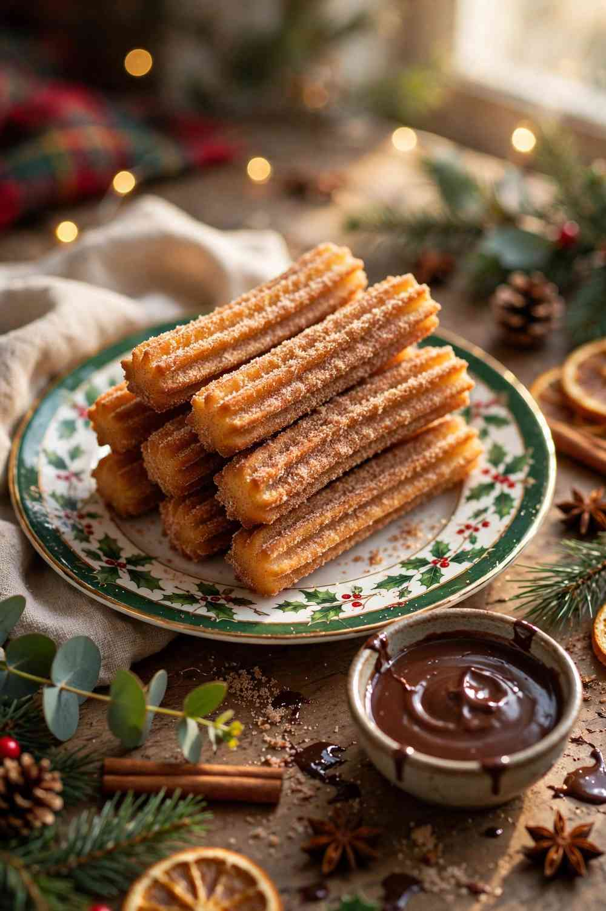
Crisp on the outside and soft inside, these air fryer churros taste like the fairground favorite without the deep fryer. A simple choux dough pipes into golden strips, then gets rolled in warm cinnamon sugar while it is still hot. Serve them with a bowl of rich chocolate sauce for dipping, and watch them disappear before they cool.
Ingredients
- 1 cup water
- 1/2 cup butter
- 1 cup flour
- 3 eggs
- 1/2 cup sugar
- 2 tsp cinnamon
- chocolate sauce
Directions
- Pour the water into a medium saucepan, add the butter, and bring it to a rolling boil over medium heat.
- Remove the pan from the heat and stir in the flour all at once, mixing until the dough forms a smooth ball that pulls away from the sides.
- Cool the dough for 5 minutes, then beat in the eggs one at a time until the mixture is smooth, thick, and glossy.
- Spoon the dough into a piping bag with a star tip and pipe 4-inch strips onto parchment paper.
- Grease the air fryer basket, lay the strips in a single layer, and air fry at 375°F for 10 minutes until deep golden and crisp.
- Toss the hot churros in a bowl of sugar mixed with cinnamon until evenly coated.
- Serve warm with chocolate sauce for dipping.
Food safety: bake until set — egg dishes should reach 160°F (71°C).
2. Air Fryer Fried Oreos
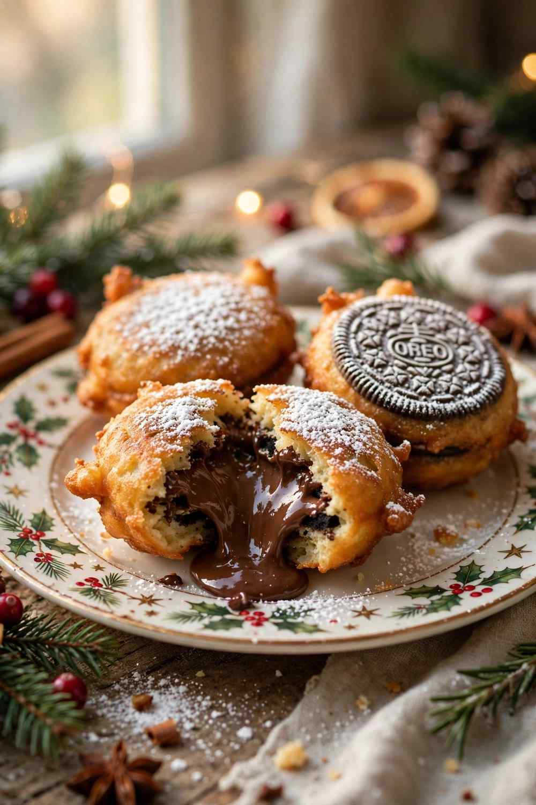
Warm, soft, and gooey in the middle, these air fryer fried Oreos bring the county fair home without a pot of hot oil. Each cookie hides inside a golden pancake batter shell that turns crisp while the chocolate center melts. A snowfall of powdered sugar finishes them, and they are best eaten warm, straight from the basket.
Ingredients
- 12 Oreo cookies
- 1 cup pancake mix
- 2/3 cup milk
- 1 egg
- powdered sugar
- cooking spray
Directions
- Whisk the pancake mix, milk, and egg in a medium bowl until the batter is smooth and thick enough to coat a spoon.
- Line the air fryer basket with parchment or spray it well with cooking spray so the batter does not stick.
- Dip one Oreo at a time into the batter, turning it with a fork until it is fully coated, then let the extra batter drip off.
- Place the coated cookies in the basket in a single layer, leaving a little space between them so the hot air can move around.
- Air fry at 350°F for 6 minutes, flipping the cookies halfway through, until the coating is puffed and golden brown.
- Lift the cookies out with tongs and dust them generously with powdered sugar while they are still warm.
- Serve right away, while the centers are soft and gooey.
Food safety: bake until set — egg dishes should reach 160°F (71°C).
3. Air Fryer Apple Fritters
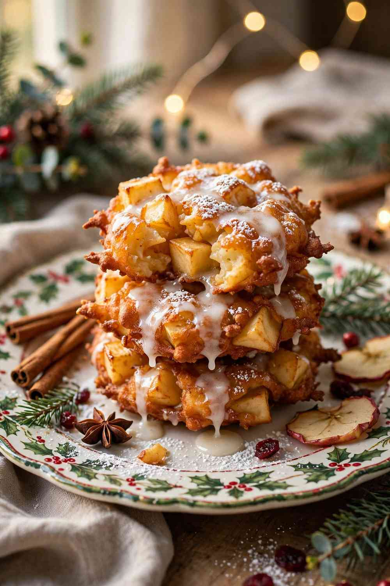
These apple fritters are crisp on the outside and soft inside, with tender chunks of apple in every bite. A lightly spiced batter fries up golden in the air fryer, no pot of oil needed, and a simple powdered sugar glaze melts over the warm fritters. They taste like an autumn orchard in dessert form and are lovely with coffee.
Ingredients
- 2 apples
- 1 cup flour
- 2 tbsp sugar
- 1 egg
- 1/2 cup milk
- 1 tsp cinnamon
- 1/2 cup powdered sugar
Directions
- Peel, core, and dice the apples into small pieces, about half an inch, so they cook through quickly and stay tender.
- Whisk the flour, sugar, egg, milk, and cinnamon in a large bowl until the batter is smooth and free of lumps.
- Fold the diced apples into the batter until they are evenly mixed through.
- Lightly grease the air fryer basket with cooking spray and spoon rounded scoops of batter into it, leaving space between them.
- Air fry at 375°F for 8 minutes, until the fritters are deep golden and crisp at the edges.
- Whisk the powdered sugar with a spoonful of milk to make a thin glaze.
- Drizzle the glaze over the warm fritters and serve right away.
Food safety: bake until set — egg dishes should reach 160°F (71°C).
4. Air Fryer Cinnamon Rolls
Soft, pillowy cinnamon rolls with a gooey spiced center come out of the air fryer in minutes, no oven needed. The canned dough bakes up puffed and golden, and a quick cream cheese icing melts into every swirl while the rolls are warm. They are an easy Christmas morning treat that tastes like you spent all morning baking.
Ingredients
- 1 can refrigerated cinnamon rolls
- 4 oz cream cheese
- 2 tbsp butter
- 1/2 cup powdered sugar
- 1 tsp vanilla
Directions
- Open the can of cinnamon rolls and separate them, keeping the icing packet aside if one is included.
- Lightly grease the air fryer basket or line it with parchment so the rolls release easily.
- Place the rolls in the basket in a single layer, leaving a little space between them so they can puff up.
- Air fry at 350°F for 10 minutes, until the rolls are puffed, golden brown, and cooked through in the center.
- While the rolls bake, beat the cream cheese, butter, powdered sugar, and vanilla in a small bowl until smooth and creamy.
- Lift the warm rolls out of the basket and spread the icing over the tops so it melts into the swirls.
- Serve warm, with extra icing on the side if you like.
Food safety: bake until set — egg dishes should reach 160°F (71°C).
5. Air Fryer Berry Cobbler Cups
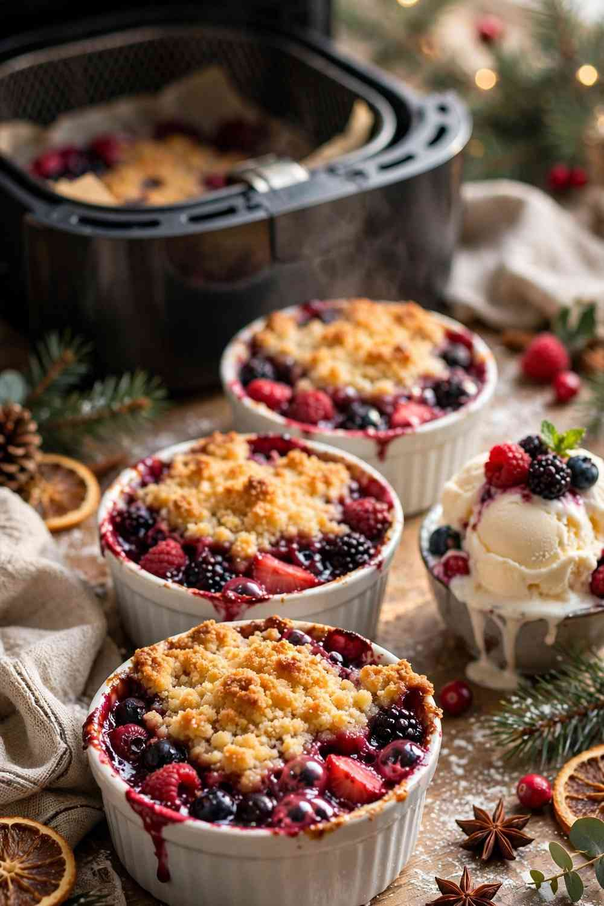
Juicy mixed berries bubble under a crisp, golden topping in these single-serve cobbler cups. The air fryer turns the topping golden and crunchy while the berries soften into a jammy filling, and each ramekin is its own little dessert. Serve them warm, with a scoop of vanilla ice cream melting over the top.
Ingredients
- 2 cups mixed berries
- 1 cup flour
- 1/2 cup sugar
- 1/2 cup butter
- 1 tsp baking powder
- 1/2 cup milk
Directions
- Rinse the berries and pat them dry, then spoon them into greased ramekins that fit inside the air fryer basket.
- Whisk the flour, sugar, and baking powder in a medium bowl until they are evenly mixed.
- Stir in the milk until a soft, thick batter forms, with no dry flour left at the bottom of the bowl.
- Drop spoonfuls of the batter over the berries, spreading it loosely so some berries peek through the top.
- Dot the tops with small pieces of butter, which helps the topping turn golden and crisp.
- Air fry at 350°F for 12 minutes, until the topping is golden and the berry filling bubbles around the edges.
- Let the cups cool for 5 minutes, then serve warm with vanilla ice cream.
Food safety: bake until set — egg dishes should reach 160°F (71°C).
Cookies, donuts & sweet bites
Cookie cups, fritters, donuts and s'mores bites — the sweet, snackable middle of the roundup.
6. Air Fryer Chocolate Chip Cookie Cups
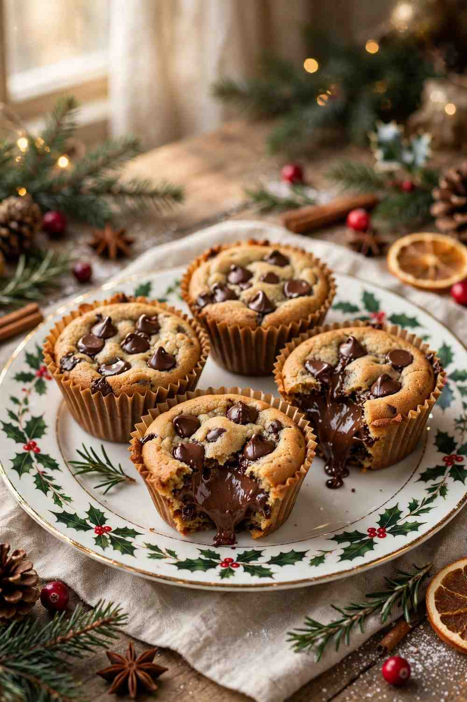
These cookie cups are crisp at the edges and gooey in the middle, with melted chocolate chips in every bite. Shaped in muffin cups, they bake into little bowls of warm chocolate chip cookie, perfect for ice cream or eating straight from the pan. They are a fun twist on a classic cookie, made fast in the air fryer.
Ingredients
- 1 cup flour
- 1/2 cup butter
- 1/2 cup brown sugar
- 1 egg
- 1/2 cup chocolate chips
- 1 tsp vanilla
Directions
- Beat the softened butter and brown sugar in a medium bowl until the mixture is light and creamy, about 2 minutes.
- Beat in the egg and vanilla until smooth, scraping down the sides of the bowl.
- Stir in the flour just until no dry streaks remain, then fold in the chocolate chips.
- Grease a muffin pan that fits the air fryer basket and press the dough into the cups, pushing it up the sides to form a well.
- Air fry at 350°F for 8 minutes, until the edges are set and golden while the centers stay soft.
- Let the cups cool in the pan for 5 minutes so they hold their shape, then lift them out carefully.
- Serve warm, filled with ice cream or whipped cream if you like.
Food safety: bake until set — egg dishes should reach 160°F (71°C).
7. Air Fryer Banana Fritters
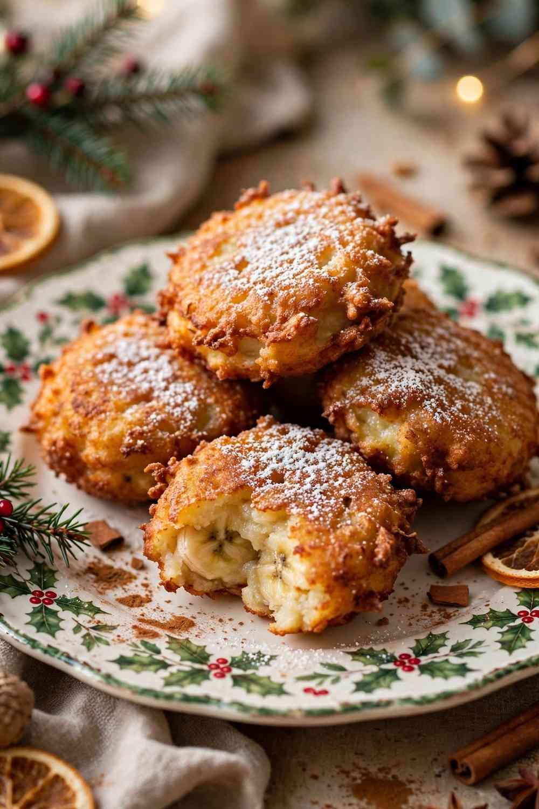
Sweet, ripe bananas turn into crisp golden fritters with soft, fragrant centers in the air fryer. A little cinnamon in the batter gives them warmth, and a dusting of powdered sugar makes them look like snow. They are a lovely way to use up overripe bananas and taste wonderful with morning coffee.
Ingredients
- 3 ripe bananas
- 1 cup flour
- 2 tbsp sugar
- 1 egg
- 1/2 tsp cinnamon
- powdered sugar
Directions
- Peel the bananas and mash them in a large bowl with a fork until mostly smooth, with a few small lumps left for texture.
- Stir in the flour, sugar, egg, and cinnamon until a thick, spoonable batter forms.
- Lightly grease the air fryer basket with cooking spray so the fritters release easily.
- Spoon rounded scoops of batter into the basket, leaving space between them so the hot air can crisp the edges.
- Air fry at 375°F for 8 minutes, flipping the fritters halfway through, until they are deep golden all over.
- Lift the fritters out with tongs and let them cool for a couple of minutes.
- Dust generously with powdered sugar and serve warm.
Food safety: bake until set — egg dishes should reach 160°F (71°C).
8. Air Fryer Pumpkin Spice Donuts
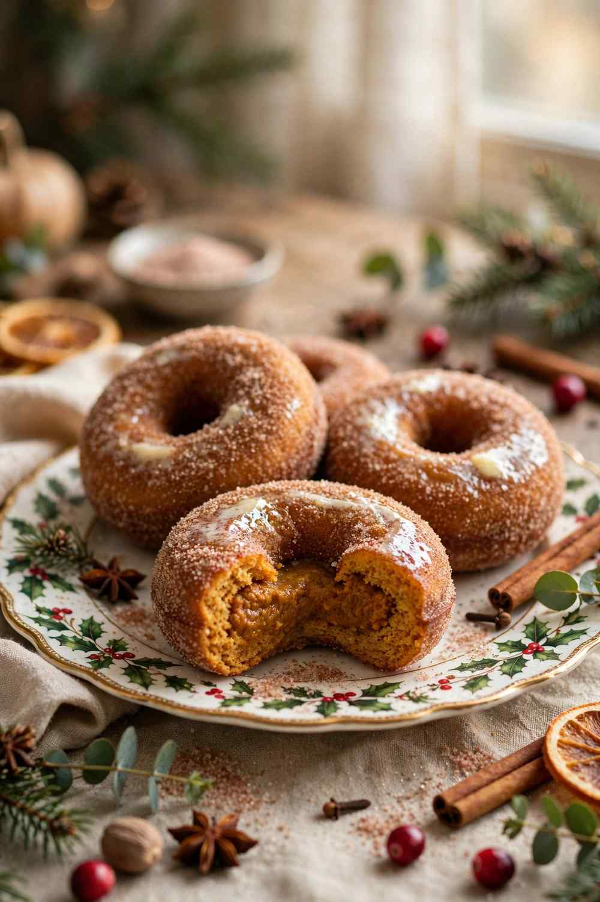
Soft, cake-like donuts full of pumpkin and warm spice come out of the air fryer in minutes, no oil needed. They bake up tender and fragrant, then get brushed with butter and rolled in cinnamon sugar for a sweet, crackly coat. They taste like autumn in a donut and are perfect with hot cocoa on a cold morning.
Ingredients
- 1 cup flour
- 1/2 cup pumpkin puree
- 1/3 cup sugar
- 1 egg
- 1 tsp pumpkin pie spice
- 2 tbsp melted butter
- cinnamon sugar
Directions
- Whisk the flour, sugar, and pumpkin pie spice in a large bowl until evenly mixed.
- Stir in the pumpkin puree and egg until a soft, sticky dough forms.
- Turn the dough onto a floured surface and roll it out to about half an inch thick.
- Cut out donut rings with a donut cutter or two round cutters, gathering and re-rolling the scraps.
- Lightly grease the air fryer basket and place the rings in a single layer, leaving room for them to puff.
- Air fry at 350°F for 8 minutes, until the donuts are puffed and spring back when pressed.
- Brush the warm donuts with melted butter and roll them in cinnamon sugar until coated.
- Serve warm, while the coating is still crisp and sweet.
Food safety: bake until set — egg dishes should reach 160°F (71°C).
9. Air Fryer S'mores Bites
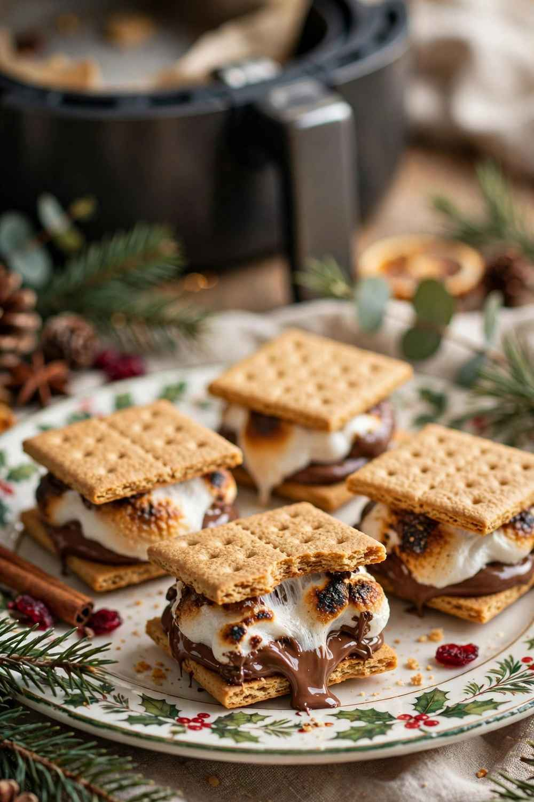
Toasty marshmallow, melted chocolate, and crisp graham cracker come together in these bite-size s'mores, no campfire needed. The air fryer toasts the marshmallows to golden in just minutes, and a second graham square presses everything into a warm, gooey sandwich. They are a sweet, messy little treat kids and grown-ups both love.
Ingredients
- 12 graham cracker squares
- 12 marshmallows
- 1 chocolate bar
- cooking spray
Directions
- Break the chocolate bar into 12 small pieces, one for each graham square.
- Line the air fryer basket with parchment or spray it lightly with cooking spray.
- Lay 6 graham squares in the basket in a single layer, leaving a little space between them.
- Top each square with a piece of chocolate and a marshmallow.
- Air fry at 350°F for 4 minutes, until the marshmallows are puffed and lightly toasted.
- Carefully place a second graham square on top of each one and press down gently so the chocolate melts.
- Let them sit for 1 minute, then serve warm while the centers are soft and gooey.
Food safety: bake until set — egg dishes should reach 160°F (71°C).
10. Air Fryer Pears with Cinnamon and Honey
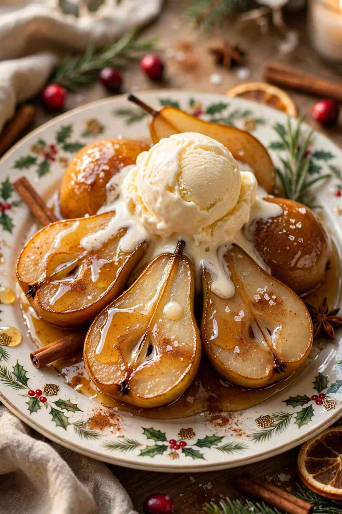
Warm, tender pears with a honey and cinnamon glaze make a light, elegant dessert straight from the air fryer. The pears soften and caramelize at the edges while the butter, honey, and spice soak in, and a scoop of vanilla ice cream melts over the top. It is simple, warm, and lovely after a big Christmas dinner.
Ingredients
- 4 pears
- 2 tbsp honey
- 1 tsp cinnamon
- 2 tbsp butter
- vanilla ice cream
Directions
- Peel the pears, cut them in half lengthwise, and scoop out the cores with a spoon.
- Melt the butter in a small bowl and stir in the honey and cinnamon until smooth.
- Brush the cut sides of the pears generously with the butter mixture.
- Place the pears cut-side up in the air fryer basket in a single layer.
- Air fry at 375°F for 10 minutes, until the pears are tender when pierced with a knife and golden at the edges.
- Lift the pears out carefully with tongs and spoon any juices from the basket over the top.
- Serve warm with a scoop of vanilla ice cream.
Food safety: bake until set — egg dishes should reach 160°F (71°C).
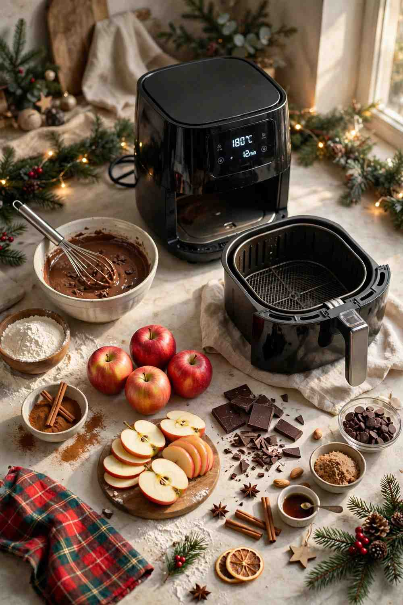
Brownies, bars & baked treats
Brownies, lemon bars and apple rings — rich, tangy and golden bakes from a small air fryer pan.
11. Air Fryer Chocolate Brownies
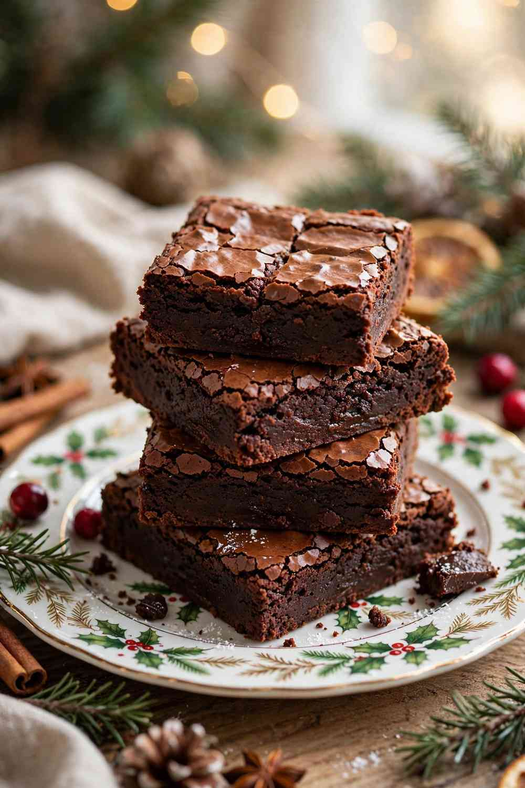
Fudgy in the middle with crisp, crackly edges, these air fryer brownies bake up rich and chocolatey in a small pan. The cocoa and melted chocolate chips give them a deep flavor, and they slice cleanly once they cool a little. Serve them warm with ice cream, or pack them into a tin for a sweet holiday gift.
Ingredients
- 1/2 cup butter
- 1 cup sugar
- 2 eggs
- 1/3 cup cocoa powder
- 1/2 cup flour
- 1/2 cup chocolate chips
Directions
- Melt the butter in a medium saucepan over low heat, then remove it from the heat and let it cool for 2 minutes.
- Whisk in the sugar and eggs until the mixture is smooth and slightly thick.
- Stir in the cocoa powder and flour just until no dry streaks remain, then fold in the chocolate chips.
- Grease a small pan that fits inside the air fryer basket and line the bottom with parchment.
- Pour the batter into the pan and spread it evenly, smoothing the top with a spatula.
- Air fry at 350°F for 15 minutes, until the edges are set and a toothpick in the center comes out with moist crumbs.
- Let the brownies cool in the pan for 10 minutes, then lift them out and cut into squares.
Food safety: bake until set — egg dishes should reach 160°F (71°C).
12. Air Fryer Lemon Bars
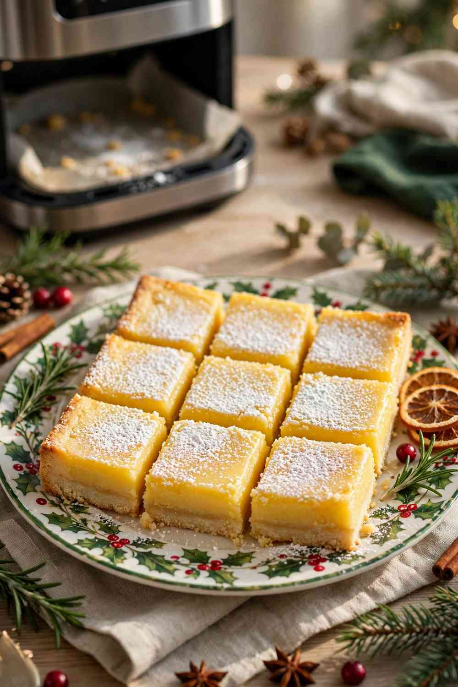
Tangy lemon filling over a buttery shortbread base makes these lemon bars bright, sweet, and just a little tart. The air fryer bakes the crust golden and sets the lemon layer into a soft, custardy top, and a dusting of powdered sugar finishes them. They are a sunny, cheerful dessert on a winter holiday table.
Ingredients
- 1 cup flour
- 1/2 cup butter
- 1/4 cup sugar
- 2 eggs
- 3/4 cup sugar
- 1/3 cup lemon juice
- 1 tbsp lemon zest
Directions
- Mix the flour, butter, and 1/4 cup sugar in a bowl until the mixture looks like coarse crumbs.
- Press the mixture firmly into a greased pan that fits the air fryer basket, making an even layer.
- Air fry the base at 350°F for 10 minutes, until it is lightly golden around the edges.
- While the base bakes, whisk the eggs, 3/4 cup sugar, lemon juice, and lemon zest until smooth.
- Pour the lemon mixture over the hot base, spreading it evenly to the corners.
- Air fry for 10 more minutes, until the filling is set and no longer jiggles in the center.
- Cool completely in the pan, then dust with powdered sugar and cut into bars.
Food safety: bake until set — egg dishes should reach 160°F (71°C).
13. Air Fryer Cinnamon Apple Rings
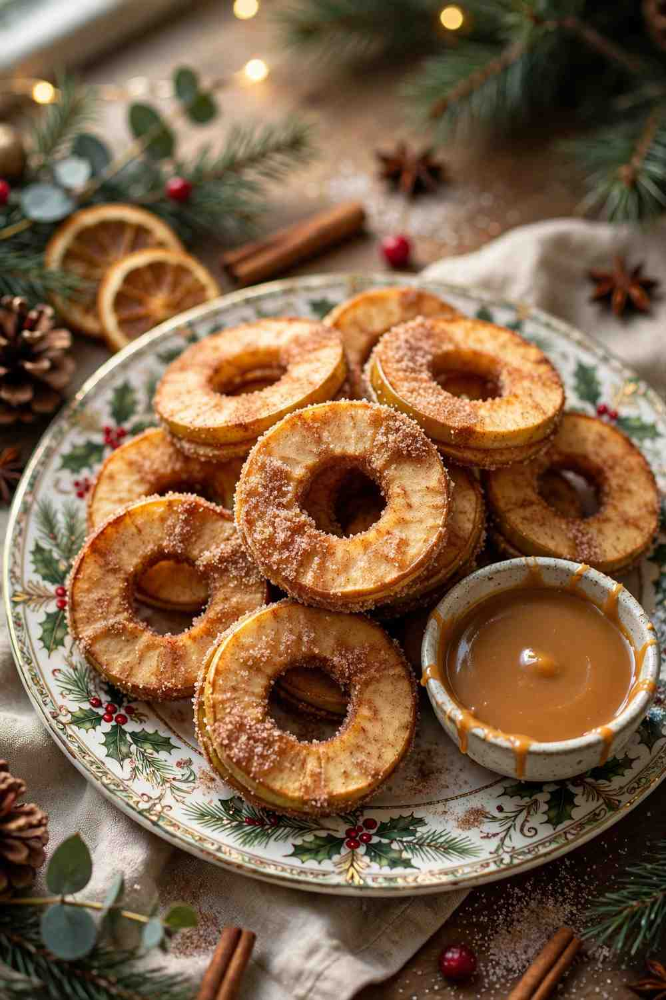
Crisp, golden apple rings wrapped in a cinnamon batter make a sweet, crunchy snack that tastes like an orchard fair. The air fryer crisps the coating while the apple inside stays tender, and a toss in cinnamon sugar while warm gives them a sweet, spiced finish. They are wonderful warm, with a little caramel sauce for dipping.
Ingredients
- 2 apples
- 1 cup flour
- 1 egg
- 1/2 cup milk
- 1 tsp cinnamon
- 1/2 cup sugar
Directions
- Peel the apples and slice them crosswise into rings about a quarter inch thick.
- Use a small round cutter or a knife to remove the core from each ring.
- Whisk the flour, egg, milk, and cinnamon in a medium bowl until the batter is smooth.
- Dip each apple ring into the batter, turning it to coat both sides, then let the extra drip off.
- Lightly grease the air fryer basket and lay the rings in a single layer, leaving space between them.
- Air fry at 375°F for 8 minutes, flipping the rings halfway through, until crisp and golden.
- Toss the warm rings in a bowl of sugar mixed with cinnamon until evenly coated.
- Serve warm, with caramel sauce for dipping if you like.
Food safety: bake until set — egg dishes should reach 160°F (71°C).
14. Air Fryer Nutella Banana Bites
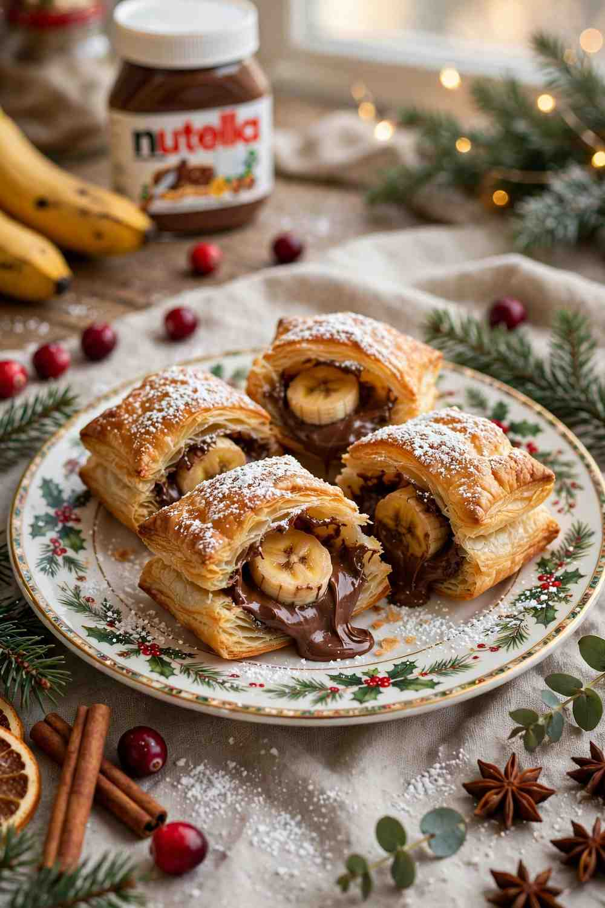
Warm banana and melted Nutella tucked inside flaky puff pastry make these bites rich, sweet, and wonderfully crisp. The pastry puffs up golden in the air fryer while the chocolate hazelnut spread melts around the banana, and a dusting of powdered sugar finishes them. They are a quick, crowd-pleasing dessert for a holiday table.
Ingredients
- 2 bananas
- 1/2 cup Nutella
- 1 sheet puff pastry
- 1 egg
- powdered sugar
Directions
- Thaw the puff pastry on the counter until it is soft enough to unfold, about 20 minutes.
- Peel the bananas and slice them into rounds about half an inch thick.
- Cut the pastry into squares, about 3 inches across, and spread a spoonful of Nutella in the center of each one.
- Top each square with 2 or 3 banana slices, then fold the corners over and press the edges to seal.
- Beat the egg in a small bowl and brush it over the tops of the parcels.
- Lightly grease the air fryer basket and place the parcels seam-side down in a single layer.
- Air fry at 375°F for 8 minutes, until the pastry is puffed and deep golden.
- Dust with powdered sugar and serve warm.
Food safety: bake until set — egg dishes should reach 160°F (71°C).
15. Air Fryer Gingerbread Donuts
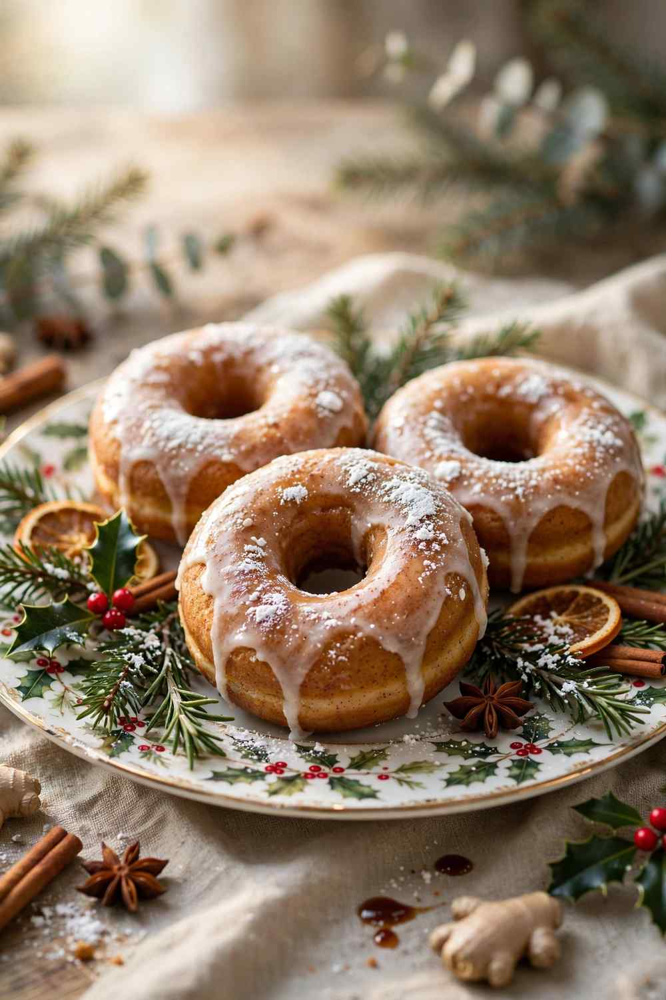
Spiced with ginger, cinnamon, and molasses, these soft gingerbread donuts taste like Christmas in every bite. They bake up tender and fragrant in the air fryer, no frying needed, and a simple powdered sugar glaze melts over the warm rings. They are a cozy, festive treat for a cold December morning.
Ingredients
- 1 cup flour
- 1/3 cup sugar
- 1 egg
- 1/2 cup milk
- 1 tbsp molasses
- 1 tsp ginger
- 1 tsp cinnamon
- 1/2 cup powdered sugar
Directions
- Whisk the flour, sugar, ginger, and cinnamon in a large bowl until evenly mixed.
- Stir in the egg, milk, and molasses until a soft, slightly sticky dough forms.
- Turn the dough onto a floured surface and roll it out to about half an inch thick.
- Cut out donut rings with a donut cutter or two round cutters, re-rolling the scraps.
- Lightly grease the air fryer basket and place the rings in a single layer, leaving room to puff.
- Air fry at 350°F for 8 minutes, until the donuts are puffed and spring back when pressed.
- Whisk the powdered sugar with a spoonful of milk to make a thin glaze.
- Dip the warm donuts in the glaze and set them on a rack to set.
Food safety: bake until set — egg dishes should reach 160°F (71°C).
Fritters, pastries & blondies
Flaky pastries, sticky maple bars and chewy blondies to finish the table.
16. Air Fryer Pineapple Fritters
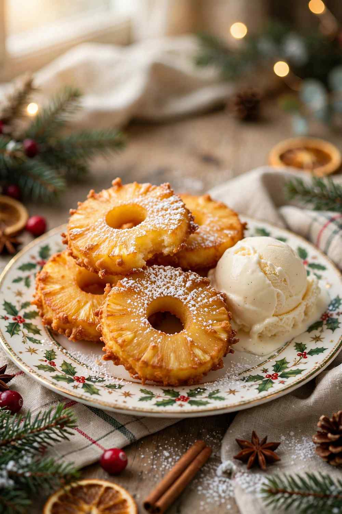
Sweet pineapple rings in a crisp, golden batter make a sunny, tropical dessert that brightens a winter table. The air fryer crisps the coating while the pineapple inside stays juicy and warm, and a dusting of powdered sugar finishes them. They are simple, quick, and lovely served warm with a little vanilla ice cream.
Ingredients
- 1 can pineapple rings
- 1 cup flour
- 2 tbsp sugar
- 1 egg
- 1/2 cup milk
- 1 tsp vanilla
- powdered sugar
Directions
- Drain the pineapple rings and pat them dry with paper towels so the batter sticks well.
- Whisk the flour, sugar, egg, milk, and vanilla in a medium bowl until the batter is smooth.
- Lightly grease the air fryer basket with cooking spray.
- Dip one pineapple ring at a time into the batter, turning it to coat both sides, then let the extra drip off.
- Place the rings in the basket in a single layer, leaving a little space between them.
- Air fry at 375°F for 8 minutes, flipping the rings halfway through, until golden and crisp.
- Lift the fritters out with tongs and dust generously with powdered sugar.
- Serve warm, with vanilla ice cream if you like.
Food safety: bake until set — egg dishes should reach 160°F (71°C).
17. Air Fryer Cherry Turnovers
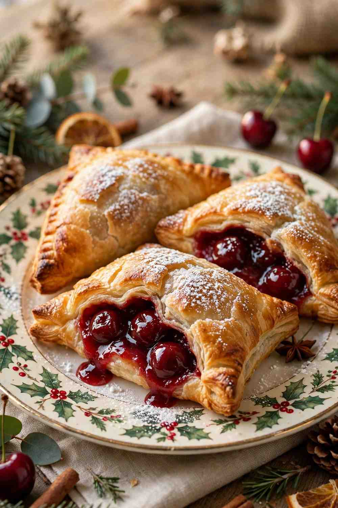
Flaky puff pastry wrapped around sweet cherry filling makes these turnovers crisp outside and juicy inside. The air fryer bakes the pastry golden and puffed in minutes, and a dusting of powdered sugar gives them a pretty finish. They are a quick, elegant dessert that tastes like a bakery treat, warm from the oven.
Ingredients
- 1 sheet puff pastry
- 1 cup cherry pie filling
- 1 egg
- 1 tbsp sugar
- powdered sugar
Directions
- Thaw the puff pastry on the counter until it is soft enough to unfold, about 20 minutes.
- Cut the pastry into 4 squares, about 4 inches across, on a lightly floured surface.
- Spoon a few tablespoons of cherry filling into the center of each square, keeping it away from the edges.
- Fold each square into a triangle and press the edges firmly with a fork to seal.
- Beat the egg in a small bowl and brush it over the tops, then sprinkle with sugar.
- Lightly grease the air fryer basket and place the turnovers in a single layer, leaving space between them.
- Air fry at 375°F for 10 minutes, until the pastry is puffed and deep golden.
- Cool for a few minutes, dust with powdered sugar, and serve warm.
Food safety: bake until set — egg dishes should reach 160°F (71°C).
18. Air Fryer Sugar Plum Pastries
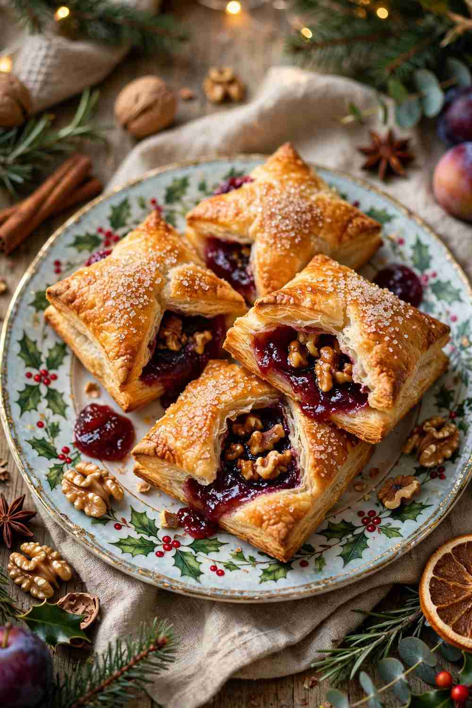
Sweet plum jam and crunchy walnuts tucked inside flaky puff pastry make these pastries a festive, old-fashioned treat. The air fryer bakes them golden and crisp in minutes, and a sprinkle of sugar gives the tops a sweet sparkle. They are lovely with coffee on a Christmas morning, warm from the basket.
Ingredients
- 1 sheet puff pastry
- 1/2 cup plum jam
- 1/4 cup chopped walnuts
- 1 egg
- 1 tbsp sugar
Directions
- Thaw the puff pastry on the counter until it is soft enough to unfold, about 20 minutes.
- Cut the pastry into 4 squares, about 4 inches across, on a lightly floured surface.
- Spoon a little plum jam into the center of each square and sprinkle with chopped walnuts.
- Fold each square into a triangle and press the edges firmly with a fork to seal.
- Beat the egg in a small bowl and brush it over the tops, then sprinkle with sugar.
- Lightly grease the air fryer basket and place the pastries in a single layer, leaving space between them.
- Air fry at 375°F for 10 minutes, until the pastry is puffed and deep golden.
- Cool for a few minutes and serve warm.
Food safety: bake until set — egg dishes should reach 160°F (71°C).
19. Air Fryer Maple Pecan Bars
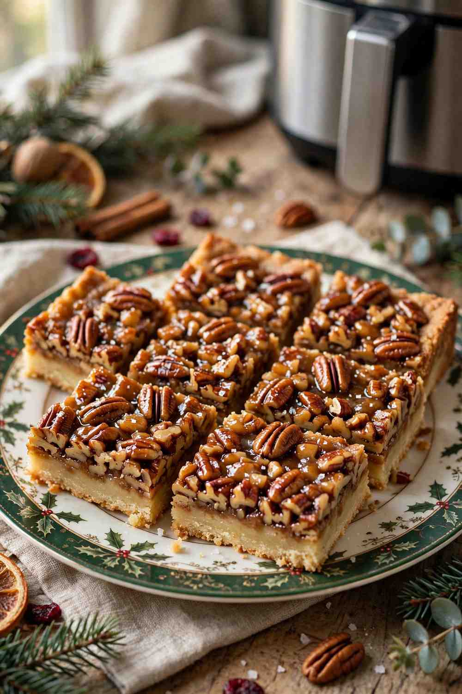
Buttery shortbread topped with a sticky maple and pecan layer makes these bars rich, nutty, and sweet. The air fryer bakes the base golden and sets the maple topping into a chewy, caramel-like layer studded with pecans. They slice into neat squares and keep well, perfect for a holiday dessert tray or a homemade gift.
Ingredients
- 1 cup flour
- 1/2 cup butter
- 1/4 cup sugar
- 2 eggs
- 1/2 cup maple syrup
- 1 cup chopped pecans
Directions
- Mix the flour, butter, and sugar in a bowl until the mixture looks like coarse crumbs.
- Press the mixture firmly into a greased pan that fits the air fryer basket, making an even layer.
- Air fry the base at 350°F for 10 minutes, until it is lightly golden around the edges.
- While the base bakes, whisk the eggs and maple syrup in a bowl, then stir in the chopped pecans.
- Pour the maple pecan mixture over the hot base, spreading it evenly to the corners.
- Air fry for 12 more minutes, until the topping is set and golden, with no jiggle in the center.
- Cool completely in the pan so the bars firm up, then lift them out and cut into squares.
Food safety: bake until set — egg dishes should reach 160°F (71°C).
20. Air Fryer White Chocolate Cranberry Blondies
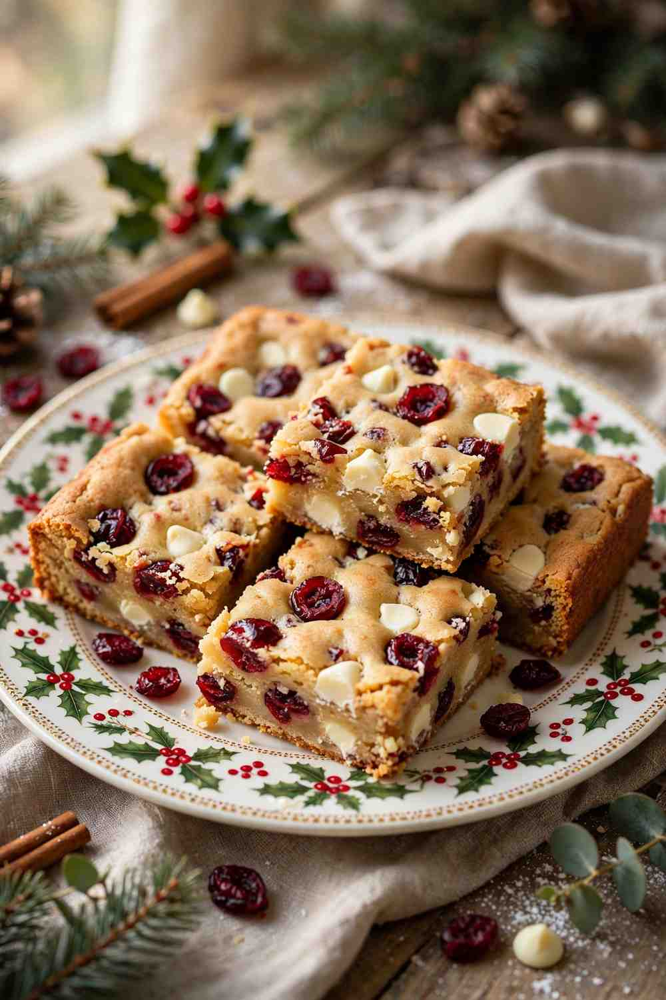
Chewy blondies studded with tart dried cranberries and sweet white chocolate chips make a festive, colorful dessert. The air fryer bakes them golden at the edges while the centers stay soft and gooey, and the red and white flecks look like Christmas in every square. They are easy to slice, share, and pack into a holiday tin.
Ingredients
- 1 cup flour
- 1/2 cup butter
- 1 cup brown sugar
- 1 egg
- 1/2 cup white chocolate chips
- 1/2 cup dried cranberries
Directions
- Melt the butter in a medium saucepan over low heat, then remove it from the heat and let it cool for 2 minutes.
- Whisk in the brown sugar and egg until the mixture is smooth and slightly thick.
- Stir in the flour just until no dry streaks remain, then fold in the white chocolate chips and cranberries.
- Grease a small pan that fits inside the air fryer basket and line the bottom with parchment.
- Pour the batter into the pan and spread it evenly, smoothing the top with a spatula.
- Air fry at 350°F for 14 minutes, until the edges are set and golden while the center stays soft.
- Let the blondies cool in the pan for 10 minutes, then lift them out and cut into squares.
Food safety: bake until set — egg dishes should reach 160°F (71°C).
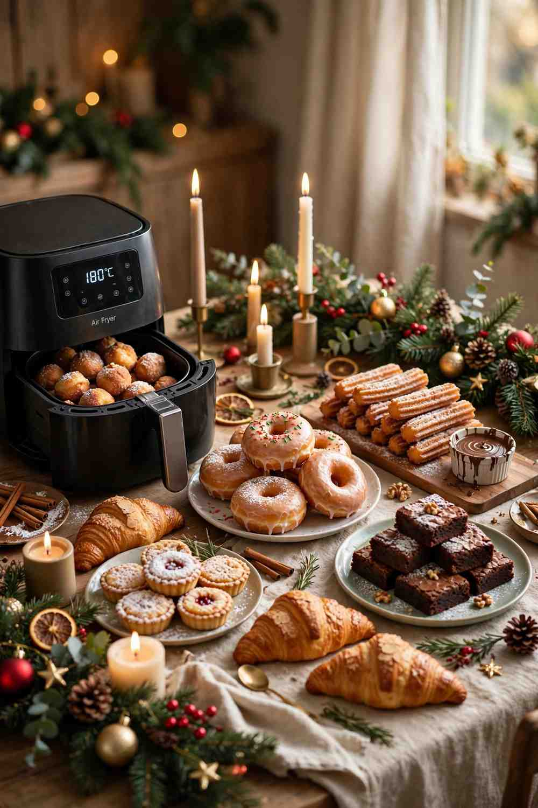
Make-ahead & serving tips
Mix batters and doughs ahead and keep them chilled until you are ready to cook — fritter batter, donut dough and brownie batter all wait happily in the fridge for a day. Air fry in small batches so the hot air can reach every piece, and keep finished desserts warm on a rack in a low oven so they stay crisp. Serve with dipping sauces and toppings on the side — chocolate sauce, caramel sauce, vanilla ice cream and whipped cream — so everyone builds their own plate. Most of these desserts keep well: store leftovers covered in the fridge for up to 3 days, and reheat them in the air fryer for 2 to 3 minutes to bring back the crunch.
Related articles
More roundups from the same table:
- 20+ Christmas Air Fryer Recipes for Easy Holiday Cooking — crispy appetizers, roasted vegetables and festive desserts.
- 30+ Christmas Cookie Recipes Everyone Will Love — classic, chocolate, spiced, filled and decorated cookies.
- 25+ No-Bake Christmas Desserts for a Crowd — no-bake treats, cheesecakes and festive sweets that set in the fridge.
- 25+ Christmas Cake Recipes for a Sweet Holiday Table — yule logs, layer cakes, bundts and pound cakes for Christmas Day.
Keep exploring
- Browse the Air Fryer Recipes roundups — crisp, golden recipes made in the air fryer.
- Browse all six categories — breakfast, lunch and dinner, desserts, air fryer, healthy recipes, and appetizers.
- More about the kitchen — what The Tasty Recipe Co is and how it works.
About The Tasty Recipe Co: Learn how we research, organize and review our food collections — see our About Us and Editorial Policy pages.
Recipe results can vary with ingredients, equipment, and technique. See our Disclaimer for food-safety and allergy notes.